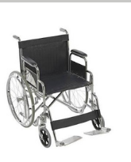
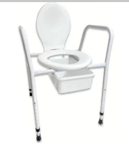
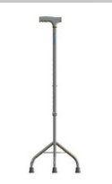
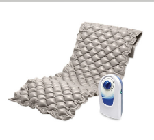
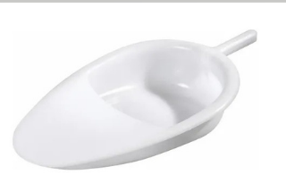
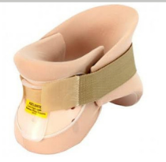
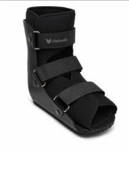
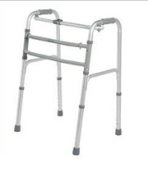
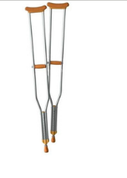

Asociación Solidaria de Rojas
Una comunidad que acompaña y ayuda.
Somos una entidad de bien público, sin fines de lucro, dedicada a fomentar la solidaridad y brindar apoyo a quienes más lo necesitan.
A través de nuestro banco ortopédico, facilitamos el préstamo de elementos para personas que los necesitan, promoviendo el bienestar y la ayuda comunitaria.
Conocé nuestros servicios →
Banco ortopédico
Elementos a disposición
Estos son algunos de los elementos con los que cuenta nuestra asociación.

Silla de baño

Bastón

Colchón antiescaras

Orinal

Bota ortopédica

Bota inmovilizadora

Andador

Muletas
La disponibilidad de los elementos puede variar. Para consultar por un préstamo, comunicate con la asociación.
💵 Solo se acepta efectivo
Moda sostenible
Feria Moda Circular
Encontrá prendas únicas, dales una segunda oportunidad y renová tu estilo de manera sostenible. (Los fondos recaudados por la venta serán destinados al arreglo o compra de elementos ortopédicos)
Días
Lunes a miércoles
Horario
9:00 a 12:00 hs
Lugar
Saavedra 106, Rojas
Estamos para ayudarte
¿Necesitás comunicarte con nosotros?
Podés acercarte a nuestra sede o llamarnos dentro de nuestros horarios de atención.
DirecciónSaavedra 106, Rojas
Teléfonos2475-473254
2475-413150
2475-413150
Horario de atenciónLunes a viernes
9:00 a 12:00
9:00 a 12:00